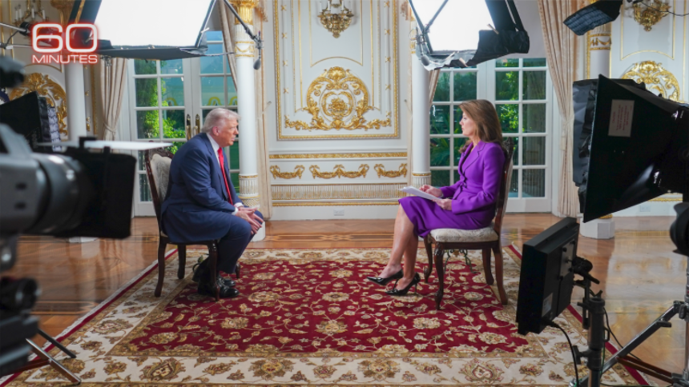

世界苦茶11月03日新闻 | 27条 | 特朗普接受CBS採訪討論大量問題

特朗普接受CBS採訪討論大量問題 | 中國10名政協副主席免除重要職務｜李强会见俄罗斯总理 | 安世中国稱库存充足 | 高市早苗接觸臺灣被中國批評
苦茶数据
美元兑人民币：7.12（昨日7.11，前日7.12）
美元兑日元：154.04（昨日153.95，前日154.05）
上证指数：3976（昨日3954，前日3961）
标普500指数：休市（昨日6840，前日6822）
比特币：107506（昨日110206，前日110359）
布伦特原油：64.77（昨日64.60，前日64.53）
中国新闻
• 李强：中国愿同俄罗斯维护共同发展和安全利益。
中国国务院总理李强会见到访的俄罗斯总理米舒斯京时强调，中国愿同俄罗斯加强战略沟通，深化协作，更好维护共同的发展和安全利益。据中国央视报道，李强星期一在浙江杭州同米舒斯京共同主持中俄总理第三十次定期会晤。李强在会上重申，中俄是“相互信赖的好邻居、好伙伴”，中国愿同俄罗斯加强发展战略对接，拓展各领域合作。央视也引述米舒斯京说法称，俄中新时代全面战略协作伙伴关系当前处于“历史最高水平”。俄罗斯愿同中国加强高层交往，拓展经贸、人文等领域交流合作，不断丰富两国关系内涵。两人也共同见证中俄签署海关、卫星导航等领域合作文件。据塔斯社报道，米舒斯京本周展开为期两天的访华之行，他星期二将前往北京与习近平会面。
• 中国国家安全部警告：外国间谍对粮食领域渗透力度加大。
中国国家安全部警告，外国间谍情报机构近年持续加大对中国粮食领域的渗透力度，窃取核心科研情报，强调这种行为对中国国家粮食安全构成威胁。中国国家安全部星期一在微信公号通报称，种子是农业的“晶片”，种业安全关乎粮食安全与乡村振兴大局，并指近年境外间谍情报机关违法获取中国大豆、玉米、水稻种子等农作物基因数据。通报提到一宗案例称，某外国间谍机关以“合作制种”名义，长期向境内一名朱姓人员及其公司购买亲本种子，朱姓人员将这些种子放在其他申报出口的集装箱里规避监管，最终朱姓人员获刑1年6个月，另17名涉案人员则被处以不同程度的行政处罚。亲本种子是用于杂交实验的第一代种子，中国严禁向外出售。
• 中加关系缓和 中国恢复赴加拿大团队游。
随着中加关系出现缓和迹象，北京宣布恢复旅行社经营中国公民赴加拿大团队游业务。据新华社报道，中国外交部发言人毛宁星期一在例行记者会上说，上述决定综合考虑了中国游客出境需求、当地旅游环境等各方面情况，“相信这将进一步促进中国同加拿大人员往来，增进两国人民的相互了解和友谊。” 中加关系自2018年起急转直下，时任中国科技巨头华为首席财务官的孟晚舟当年在加拿大被捕，中国随后以涉嫌间谍活动为由拘留两名加拿大人。两国关系此后持续紧绷，冠病疫情后，中国陆续恢复对部分国家的出境团队游业务，但加拿大被排除在外。
• 中国升级版第六代战机向美国发出争夺空中霸权的警告。
中国更新后的第六代战机已向美国发出空中优势警告 在首次公开亮相仅10个月后，原型机出现显著变化，显示向量产“加速”推进 中国两套第六代战斗机方案都出现了显著变化，更新后的原型机在首次公开露面仅10个月后就被发现试飞，表明该国在争夺与美国的空中优势方面进展迅速。非官方称为J-36的飞机被认为是第二号原型机，具备重要升级，例如用有棱角的尾喷管取代了早期版本的内凹式排气口。《战区》网站报道称，这种有棱角的喷管可能有助于在某些飞行阶段解决稳定性和机动性问题。
• 美防长为何一面指责中国、一面称赞美中关系。
2025年11月2日美国国防部长赫格塞思最新表示，华盛顿和北京已同意将建立直接的军事沟通渠道，并称“美中关系前所未有的好”。这和他此前的表态形成了鲜明对比。美国防长赫格塞思在X上最新写道，他和美国总统特朗普一致认为，美中双边关系“从未如此之好”，特朗普早些时候在韩国与中国领导人习近平的会晤“为美中两国持久和平与成功奠定了基调”。这位五角大楼负责人也称，刚刚在马来西亚的地区安全会议间隙与中国国防部长董军进行了交谈，双方一致认为，“和平，稳定和良好关系是我们两个伟大而强大国家最好的发展道路”。赫格塞思强调要走一条“实力，相互尊重和积极关系”的道路。
印太新闻
• 高市出席APEC打台湾牌被北京批高调炒作。
日本首相高市早苗公布与出席亚太经济合作组织首脑会议的台湾领袖代表林信义的合照，并称呼对方的台湾总统府资政身份。北京就此向日本提出严正交涉和强烈抗议，并批评高市早苗“高调炒作”、严重违反一个中国原则。受访学者分析，刚任相的高市是在争取与中国大陆在外交上磨合的谈判筹码，但此次习特会没有提及台湾，高市打台湾牌的“时机非常不好”。高市早苗分别于上周五和周六在社媒平台X上发文，还附上与林信义互动的照片。第一次发文，她表示在APEC首脑会议前，“与台湾总统府资政林信义互致问候”；第二次发文则表示，“期待深化日台务实合作”。
• 日本政府将取消个人进口的税收优惠。
日本财务省正在就取消个人进口商品税收优惠制度展开协调。中国电商网站等利用该制度向日本低价销售商品，与日本当地零售商的进口商品产生价格差。各国正在调整进口商品的税收优惠制度，日本也在加紧制定对策。日本讨论取消的是针对以个人使用为目的的进口商品、作为税金计算基准的征税价格比通常优惠四成的特例。适用该特例时，进口商品需缴纳的消费税和关税将降低。该特例也适用于日本国内的个人通过电商网站从海外购买产品的情况。关于取消个人进口商品相关特例，日本财务省计划将相关内容纳入在年底制定的2026年度税制改革大纲。
科技新闻
• 沙特阿拉伯正大举押注，力争成为全球人工智能强国。
沙特正在将石油财富投入其庞大的人工智能雄心。其主要投资载体是本土公司Humain，正在构建从数据中心，云能力到大型语言模型与应用的完整生态。这家公司由王国近1万亿美元的主权财富基金所有。沙特王储穆罕默德·本·萨勒曼在唐纳德·特朗普总统国事访问利雅得前的五月公布了Humain。本周，在同一地点举行的年度“未来投资倡议”上，这一项目的规模，野心与雄厚资金来源变得更加清晰。Humain首席执行官塔雷克·阿明正着力将沙特打造为仅次于美国和中国的世界第三大人工智能市场。对于这一行业新秀而言这是大胆的目标，但阿明认为王国的竞争优势在于丰富且廉价的能源资源。
**• 特朗普：不会允许中国取得英伟达最先进芯片 **
美国总统特朗普在接受哥伦比亚广播公司（CBS）专访时表示，美国不会允许中国取得英伟达最先进的人工智能（AI）芯片。特朗普认为，如果中国获得这种芯片，将会拥有和美国同等的优势。他还提到，英伟达最新推出的Blackwell芯片比其他所有芯片领先了十年，美国不会让其他国家取得这种芯片。此前，外界一直在猜测特朗普是否会允许英伟达向中国提供某个版本的Blackwell芯片，他曾暗示可能会允许英伟达向中国出口简化版的下一代先进GPU芯片。
**• Bluesky达到4000万用户 引入’点踩’测试版。 **
Bluesky 于周五宣布达到4000万用户的新里程碑，将很快开始测试 “点踩” 功能，以此改善其主要发现信息流及其他板块的个性化体验。该消息与一系列对话控制更新和调整同时公布，其中包括对回复功能的微调、有毒评论检测的改进，以及为个体用户优先呈现更相关对话的其他方法。随着 “点踩” 测试版即将推出， Bluesky 将纳入这一新信号来改进用户个性化。当用户 “点踩” 帖子时，系统将学习他们希望减少看到哪类内容。这不仅有助于优化信息流的内容排序，也将影响回复的排序。这些改变旨在使 Bluesky 成为更能进行有趣、真诚且尊重相互交流的场所。
经济新闻
• 安世中国：库存可供应至年底或更长时间。
荷兰总部停止供应晶圆后，晶片制造商安世中国强调，公司已建立充足成品与在制品库存，能够稳定和持续地满足客户直至年底乃至更长时间的订单需求。荷兰安世半导体自10月26日起，停止向公司位于中国广东省东莞市的封装测试工厂供应晶圆。一封由荷兰安世半导体临时首席执行官蒂尔格签署的致客户信函指，这是由“当地管理层近期未能履行约定的合同付款条款直接导致”。安世中国星期天就此发表声明，指荷兰总部对中国管理层未能履行合同条款的说法“完全是无中生有，恶意抹黑安世中国管理层”。
• 深铁再出手救万科但收紧贷款条件。
中国房地产巨头万科集团获大股东深圳地铁集团同意提供最多220亿元贷款。不过，深铁集团收紧条件，要求万科为贷款提供担保物。万科星期天晚间披露，公司与深铁集团订立贷款框架协议，约定今年以来至万科召开2025年度股东大会为止，深铁向万科提供不超过220亿元借款额度。借款额度包括框架协议生效之前已实际发生、但公司未提供抵押或质押担保的借款，以及协议生效之后发生的借款。截至目前，深铁向万科提供的无抵质押担保借款合同金额为203.73亿元，万科实际已提取197.1亿元。财新网报道指，万科料不迟于2026年6月30日召开年度股东大会。
• 中国一年来首次寻求采购美国小麦。
随着中美贸易紧张关系在两国元首上周会晤后有所缓和，中国正寻求采购美国小麦，是一年多来的首次。知情人士透露，中国一家大型粮食进口商在周末就今年12月至明年2月装运的美国小麦进行询价。美国农业部数据显示，自去年10月初以来，中国尚未采购任何美国小麦。美国总统特朗普与中国国家主席习近平上周在韩国举行会谈后，北京称双方就扩大农产品贸易达成共识，但未披露具体细节。白宫周末发布的简报则显示，北京已承诺向美国农产品开放市场，并将取消今年3月对美国小麦加征的关税。北京重新表现出对美国小麦的兴趣，正值中国整体小麦进口量大幅下降。今年前九个月，中国小麦进口量较去年同期下降至不到三分之一。
• 中欧举行“升级版”出口管制对话磋商。
中国与欧盟代表在布鲁塞尔举行“升级版”中欧出口管制对话磋商。中国商务部星期一在官网发布消息说，商务部安全与管制局局长江前良与欧委会贸易总司副总司长雷东内，于10月31日至11月1日，在布鲁塞尔举行“升级版”中欧出口管制对话磋商。双方就彼此关切的出口管制领域进行了“深入、富有建设性的沟通”。双方也同意继续保持沟通交流，促进中欧产业供应链稳定与畅通。中国商务部部长王文涛与欧盟委员会贸易和经济安全专员谢夫乔维奇曾于10月21日进行视频通话，就出口管制、欧盟对华电动车反补贴等中欧经贸重点议题深入交换意见。谢夫乔维奇当时向媒体透露，已邀请中国官员前往布鲁塞尔，就稀土出口管制寻找紧急解决方案。
• 易纲等10名中国政协副主任不再担任职务。
中国全国政协常委会会议表决，决定10名专门委员会副主任不再担任职务，包括担任经济委员会副主任的中国央行原行长易纲。据新华社报道，全国政协第十四届常委会第14次会议星期六在北京闭幕。经会议表决，共九名不同专门委员会的副主任不再担任职务。他们是：提案委员会副主任张军扩、经济委员会副主任易纲、农业和农村委员会副主任张桃林、教科卫体委员会副主任张杰和曹卫星、社会和法制委员会副主任陈国庆、港澳台侨委员会副主任王荣和陈元丰、以及外事委员会副主任隋军。会议也通过免去文化文史和学习委员会副主任傅兴国的职务，并接受他辞去委员的决定。通报仍以“同志”称呼以上10人。
• 美联储内部反对再次降息的声浪加大。
两位地区联储主席称其不支持上周的降息，这也印证了美联储主席杰伊•鲍威尔上周三发出的警告：12月再次降息绝不是“必然会发生的事情”。达拉斯联储主席洛里•洛根和克利夫兰联储主席贝丝•哈马克上周五表示，她们原本希望利率能维持不变，而不是将联邦基金利率的目标区间下调0.25点，至3.75%-4%。哈马克表示：“我更倾向于维持利率不变。”她补充说，她担心价格压力“大范围存在”，反映出电价和保险成本上涨，以及美国总统唐纳德•特朗普的关税。您已阅读19%，剩余81%包含更多重要信息，订阅以继续探索完整内容，并享受更多专属服务。
• 贸易协定与900亿美元关税收入：本周开庭的具有里程碑意义的最高法院案件关系何在。
就在几天后，最高法院将开始审理一宗特朗普总统称之为“我们国家历史上最重要的案件之一”的案件。随着他大部分关税——可以说是其整个经济议程的基石——面临危险，他提出了在美国最高法院前前所未有的出庭。该案将审查特朗普是否有权根据一项被称为《国际紧急经济权力法案》的法律来征收关税。特朗普曾利用该法案将对包括印度和巴西在内的重要贸易伙伴的进口税率推高至最高50%，并在今年早些时候将对中国的税率推高至145%。若裁决对总统不利，并不意味着现有所有关税会被立即取消，但裁决结果可能彻底重塑特朗普的经济策略。
• 安世中国指责荷兰总部欠货款10亿人民币。
安世中国指责荷兰总部欠货款10亿人民币 2025年11月2日荷兰安世半导体中国子公司指责总部“极其不负责任”暂停晶圆供应，并称自身未违约且母公司欠款10亿元人民币。随着中美之间达成新协议，中国商务部称将考虑对符合条件的安世产品出口予以豁免。德国政府对此事件的缓和前景表示谨慎乐观。荷兰芯片制造商安世半导体的中国子公司周日表示，该公司已建立“充足的成品和在制品库存”，其供应链在母公司停止晶圆供应后依然安全稳定，足以满足年底及以后的订单需求。该公司也已开始寻找新的晶圆供应商。路透社周五报道称，安世半导体临时CEO斯特凡·提尔格于10月29日签署的一封信函指出。
俄乌战争
• 一位高级官员对BBC表示，北约“将与乌克兰站在一起”，以实现持久和平。
北约高级官员对BBC表示，北约“将与乌克兰站在一起”，直到实现持久和平 自今年一月起担任北约军事委员会主席的朱塞佩·卡沃·德拉戈内海军上将对BBC表示，北约“将与乌克兰并肩，直到有一天他们能坐到谈判桌前，达成持久和平”。他从作战角度认为俄乌战争已经陷入胶着，“差不多是坐下来谈判的时候了，因为继续打下去只是在浪费生命”。德拉戈内指出，俄罗斯于2022年对乌克兰的全面入侵，反而促使芬兰和瑞典加入了西方联盟，他将这场战争描述为俄罗斯总统普京的战略失败，尽管俄罗斯近期在战场上有缓慢。
• 泽连斯基称乌克兰已收到德国承诺的“爱国者”防空系统。
乌克兰总统弗拉基米尔·泽连斯基11月2日宣布，德国已按照先前的协议向乌克兰交付了“爱国者”防空系统。“我们加强了乌克兰防空的‘爱国者’组成部分，”总统在社交媒体上写道。“我感谢德国，特别感谢联邦总理弗里德里希·梅尔茨为这项共同措施，以保护人民生命免受俄罗斯恐怖主义的侵害。我们为这次防空增援准备已久，现在达成的协议已得到落实。” 该声明发表前约一个多月，德国国防部长鲍里斯·皮斯托里乌斯曾表示，柏林将于2025年底前向乌克兰提供两套“爱国者”系统。自2025年春以来，俄罗斯对乌克兰的空袭在范围和强度上均有所升级。
• 克里姆林宫发言人称特朗普与普京会面“没有必要”。
克里姆林宫发言人德米特里·佩斯科夫11月2日表示，美国总统唐纳德·特朗普与俄罗斯总统弗拉基米尔·普京之间“没有必要”举行会晤。“从假设上讲，这是可能的，但目前没有这个必要，”佩斯科夫在对俄罗斯国家通讯社塔斯社的讲话中说。“现在需要的是就解决问题的细节进行非常艰苦的工作。”普京在10月16日给特朗普通话时，美国总统说他会在布达佩斯与普京会面，并谈及据称在和谈中取得的“进展”。然而，普京—特朗普会晤计划在10月21日被搁置，特朗普表示他不想与普京举行“徒劳的会面”。他称一个关键问题是莫斯科拒绝停止沿现有前线的作战。
• 过去一天内，俄罗斯在乌克兰各地造成至少15人死亡、20人受伤。
乌克兰官员11月2日表示，在过去一天内俄罗斯在乌克兰各地的袭击中至少造成15名平民死亡，20人受伤。乌克兰空军称，俄罗斯在夜间使用两枚伊斯坎德尔-M弹道导弹和79架攻击无人机发动袭击，其中约50架为沙赫德型无人机，还有格尔贝拉和诱饵无人机。乌方防空系统击落67架无人机，12架在六个不同地点击中目标。扎波罗热州州长伊万·费奥多罗夫报告称，俄军对该州18个定居点发动753次袭击。袭击造成该地区1人死亡，4人受伤。当局收到31起房屋，公寓，车辆和基础设施受损报告。袭击后仍有11，434户用户断电，能源工作人员正在继续消除后果。顿涅茨克州州长瓦迪姆·菲拉什金报告称，俄军袭击造成该州5人死亡。
• 奥尔班意想不到的难题——特朗普对俄罗斯能源的攻势。
奥尔班意外的烦恼——特朗普对俄能源的进攻 匈牙利总理维克多·奥尔班长期与布鲁塞尔和基辅对峙，但他遭遇了一个出乎意料的障碍——美国总统唐纳德·特朗普的反复无常。原本预期在布达佩斯举行、将成为奥尔班政治高光的与俄罗斯总统弗拉基米尔·普京峰会已被取消。更令人雪上加霜的是，正是奥尔班如今感受到特朗普外交政策多变带来的冲击：他面临切断俄能源进口的压力，并担忧美国对莫斯科实施新一轮制裁的影响。特朗普对俄罗斯主要能源公司俄罗石油和卢克石油的制裁，引发了奥尔班罕见的批评——他在10月27日表示此举过于过分。奥尔班计划于11月7日前往华盛顿会见特朗普。
世界新闻
• 停摆僵局预计将拖入第六周，特朗普敦促共和党改变参议院规则。
特朗普称他“不会被民主党敲诈”，在政府停摆持续之际回避谈判 华盛顿——总统唐纳德·特朗普表示，他“不会被民主党敲诈”以重开政府，并明确表示在政府停摆即将进入第六周之际，他无意进行谈判。在周日播出的CBS《60分钟》采访中，特朗普称那些要求延长医疗补贴的民主党人“已经迷失了方向”，并预测他们最终会向共和党屈服——共和党人表示在民主党投票同意重开政府之前不会进行谈判。
• 民调：大多数美国人认为政府在撒谎。
一项新的民调显示美国人如何看待美国，而结果并不乐观。POLITICO的民调发现，更多美国人认为国家的“最好时光”已在过去，而非在前方。美国的品牌正在从内部衰退。在这个严重分裂的国家中，悲观和犬儒情绪占据主导：三分之二的美国人表示“政府经常故意对人民撒谎”至少很可能是真的。这种不信任跨越党派界限：唐纳德·特朗普的选民和卡玛拉·哈里斯的选民中都存在强烈多数的同意。根据由Public First为POLITICO进行的民调，近一半美国人表示国家的最好时光已在过去。相比之下，认为最好时光在前方的人占41%，这凸显出人们对自身未来和国家走向的普遍不安。
• 里约市民支持警方血腥执法行动。
最新民调显示，饱受犯罪困扰的里约热内卢市民强烈支持上周造成创纪录的121人丧生的血腥执法行动，希望警方对控制该市贫民窟的持枪犯罪集团采取坚决措施。上周二，约2500名军警突袭了里约热内卢两个最危险的地段，试图抓捕该市势力最大的贩毒集团“红色司令部”的头目。在发生一场激烈的交火后，数十具尸体横陈街头的画面传遍世界各地。此次行动的血腥程度震惊了人权倡导者和巴西左翼政府，但圣保罗民调机构AtlasIntel发现，62%的里约市民支持警方的行动。在贫民窟居民中，这一比例更是高达88%。
• 奥巴马再度电话纽约市长候选人曼达尼，表示愿意成为他的顾问。
纽约时报报道，奥巴马于周六致电纽约市市长候选人佐赫兰·曼达尼，对他的竞选表示赞赏，并表示未来愿意成为他的“顾问”。这通私人电话持续了大约30分钟，据两位参与或在通话后立即获悉内容的人士透露，两人讨论了新政府组建团队的挑战，以及如何建立一个能够落实曼达尼提出的“城市可负担性”议程的治理体系。这通电话具有特殊意义。民主党内部对于曼达尼的分歧颇深，而奥巴马依然是党内具有重要影响力的人物。图为AI合成。奥巴马对曼达尼的竞选方式表示钦佩，还调侃了自己过去的政治失误，并指出曼达尼在聚光灯下几乎没有出错。